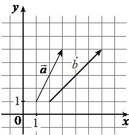

Авторский разбор и аудит предварительны; внешней экспертизы нет.
Модель автора: claude-opus-5-5 (opus); в основных частотах: True ·
Впишите правильный ответ.
На координатной плоскости изображены векторы и координатами которых являются целые числа. Найдите длину вектора

КЭС: 7.5 Координаты и векторы
10
| ID / вход | Действие | Результат | Локальные KC |
|---|---|---|---|
| s1 · condition | Найти координаты вектора a как разность координат конца и начала: начало (1; 1), конец (3; 5) по клеткам рисунка. | a = (2; 4) | kc1 |
| s2 · condition | Найти координаты вектора b как разность координат конца и начала: начало (2; 1), конец (6; 5) по клеткам рисунка. | b = (4; 4) | kc1 |
| s3 · s1, s2 | Сложить векторы a и b покоординатно. | a + b = (6; 8) | kc2 |
| s4 · s3 | Вычислить длину вектора a + b по его координатам: √(6² + 8²). | |a + b| = √100 = 10 | kc3 |
[
{
"id": "m1",
"name": "Координатный метод: координаты векторов по рисунку, координаты суммы, длина суммы",
"step_ids": [
"s1",
"s2",
"s3",
"s4"
]
}
]Вход: координаты начала и конца вектора (в том числе считанные по целочисленной сетке). Операция: из каждой координаты конца вычесть соответствующую координату начала. Применимо к векторам на координатной плоскости или в пространстве с известными концами.
{
"local_kc_id": "kc1",
"status": "new_candidate",
"catalog_kc_id": null,
"evidence": [
{
"ref": "step:s1:action",
"quote": "Найти координаты вектора a как разность координат конца и начала"
},
{
"ref": "step:s1:result",
"quote": "a = (2; 4)"
},
{
"ref": "step:s2:action",
"quote": "Найти координаты вектора b как разность координат конца и начала"
},
{
"ref": "step:s2:result",
"quote": "b = (4; 4)"
},
{
"ref": "image:assets/0306dd4af03d614700733bf0.png",
"region_description": "Клетчатая координатная плоскость с подписями 0, 1 на осях Ox и Oy (клетка = 1). Вектор a (тонкая стрелка) начинается в узле (1; 1) и заканчивается в узле (3; 5); вектор b (толстая стрелка) начинается в узле (2; 1) и заканчивается в узле (6; 5). Считанные автором концы и результаты a = (2; 4), b = (4; 4) с рисунком согласуются."
}
],
"context_refs": [
"condition",
"image:assets/0306dd4af03d614700733bf0.png"
],
"alternatives_checked": [
{
"catalog_kc_id": "graph_coordinates",
"reason": "Покрывает только считывание координат отмеченных точек по масштабу сетки (здесь — концов векторов), но не вычитание координат начала из координат конца; к тому же сформулирован для графика. Это возможный отдельный компонент шагов s1/s2, а не всё действие kc1."
},
{
"catalog_kc_id": "literal_68de6fa84846",
"reason": "Сложение координат двух уже известных векторов; здесь операция другая — получение координат вектора по двум точкам (конец минус начало)."
},
{
"catalog_kc_id": "literal_4af504d61511",
"reason": "Аффинная комбинация концов для точки деления отрезка; результат — точка, а не вектор-разность."
},
{
"catalog_kc_id": "literal_59f2d9499ac1",
"reason": "Умножение вектора на число по координатам; иная операция."
}
],
"rationale": "Операция в s1 и s2: из координат конца вычесть соответствующие координаты начала, объект — направленный отрезок на координатной плоскости, результат — координаты вектора (2; 4) и (4; 4); арифметика верна. В каталоге нет узла, определяющего переход от двух точек (начало, конец) к координатам вектора: ближайшие узлы описывают либо считывание точек с сетки, либо операции над уже заданными координатами векторов. Считывание концов по клеткам в тех же шагах является входным состоянием из рисунка и в предлагаемое определение не включается (см. i1).",
"proposal": {
"name": "Находить координаты вектора по координатам начала и конца",
"definition": "Для вектора с известными координатами начала A и конца B в одной системе координат вычислить координаты AB как покоординатную разность B − A (конец минус начало). Считывание координат точек с рисунка или сетки не входит и размечается отдельно; порядок «конец минус начало» существен.",
"closest_alternatives": [
"graph_coordinates",
"literal_68de6fa84846",
"literal_4af504d61511"
]
},
"blocking": false,
"issue_ids": [
"i1"
]
}Вход: координаты двух векторов в одной системе координат. Операция: сложить соответствующие координаты, получив координаты суммы. Граница: только для векторов, заданных координатами в одном базисе.
{
"local_kc_id": "kc2",
"status": "match",
"catalog_kc_id": "literal_68de6fa84846",
"evidence": [
{
"ref": "step:s3:action",
"quote": "Сложить векторы a и b покоординатно."
},
{
"ref": "step:s3:result",
"quote": "a + b = (6; 8)"
}
],
"context_refs": [
"step:s1:result",
"step:s2:result"
],
"alternatives_checked": [
{
"catalog_kc_id": "literal_59f2d9499ac1",
"reason": "Умножение вектора на скаляр; в s3 скалярного множителя нет."
}
],
"rationale": "Операция — покоординатное сложение; объект — два вектора плоскости в одной системе координат, полученные в s1 (a = (2; 4)) и s2 (b = (4; 4)); результат (6; 8) верен (2 + 4 = 6, 4 + 4 = 8). Определение узла «сложить соответствующие координаты векторов одной размерности и системы координат» выполнено целиком; получение самих координат относится к предыдущим шагам и в s3 не переносится.",
"proposal": null,
"blocking": false,
"issue_ids": []
}Вход: координаты вектора в прямоугольной декартовой системе. Операция: извлечь квадратный корень из суммы квадратов координат. Граница: только для ортонормированной (прямоугольной) системы координат.
{
"local_kc_id": "kc3",
"status": "match",
"catalog_kc_id": "literal_d4dd6695995d",
"evidence": [
{
"ref": "step:s4:action",
"quote": "Вычислить длину вектора a + b по его координатам: √(6² + 8²)."
},
{
"ref": "step:s4:result",
"quote": "|a + b| = √100 = 10"
}
],
"context_refs": [
"step:s3:result",
"image:assets/0306dd4af03d614700733bf0.png"
],
"alternatives_checked": [
{
"catalog_kc_id": "pythagoras",
"reason": "Требует установленного прямоугольного треугольника; в s4 треугольник не строится, выполнена формула длины вектора — по оговорке узла простая сумма квадратов его не подтверждает."
}
],
"rationale": "Операция — квадратный корень из суммы квадратов координат; объект — вектор a + b = (6; 8) из s3; результат √(36 + 64) = 10 верен и совпадает с ответом. Ортонормированность системы следует из рисунка: прямоугольные оси и квадратная сетка с единичным шагом (подписи 1 на обеих осях). Определение узла выполнено целиком.",
"proposal": null,
"blocking": false,
"issue_ids": []
}[ "Координаты начал и концов векторов считаны с рисунка по клеткам: a от (1; 1) до (3; 5), b от (2; 1) до (6; 5)." ]
[
{
"id": "i1",
"kind": "missing_annotation",
"refs": [
"step:s1:action",
"step:s2:action",
"image:assets/0306dd4af03d614700733bf0.png"
],
"description": "В s1 и s2 вместе с вычитанием выполняется считывание координат концов векторов «по клеткам рисунка» ((1; 1), (3; 5), (2; 1), (6; 5)); это действие не размечено отдельно, а kc1 включает его лишь как форму входа. Возможное соответствие — graph_coordinates, но граница сомнительна: узел сформулирован для точек графика, а здесь — концы векторов на клетчатой плоскости. Считанные значения проверены по рисунку и верны, поэтому на ответ и на решения kc1–kc3 это не влияет.",
"blocking": false,
"affected_local_kc_ids": [
"kc1"
]
}
]{
"author_path": "data/annotation/runs/2026-11-07-fipi-team-bogdan108-051-150/raw/author/3F02c4.json",
"auditor_path": "data/annotation/runs/2026-11-07-fipi-team-bogdan108-051-150/raw/auditor/3F02c4.json",
"accepted_after_review": null
}